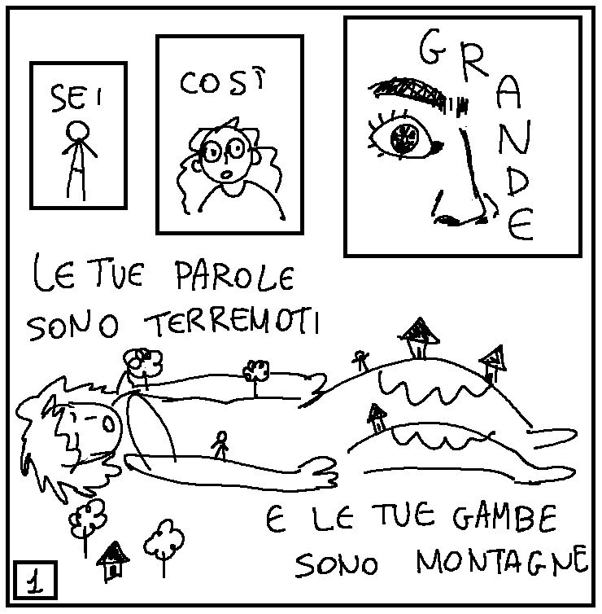
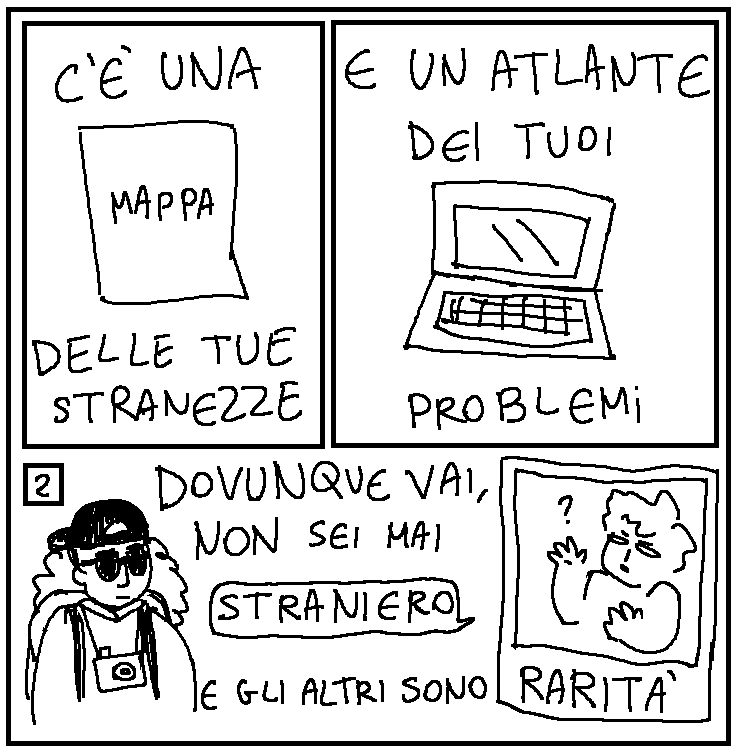

Mappa
Fumetto di due pagine quadrate, in bianco e nero, fatto con MS Paint. Trascritto con l'aiuto di @mrfryjelly._. su discord.

1. Sei così grande. / Le tue parole sono terremoti / e le tue gambe sono montagne.
In alto a sinistra, un piccolo rettangolo con dentro una figura umana stilizzata e la parola “Sei”. A seguire, un riquadro più grande con la parola “Così". Dentro, si vede il busto della figura di prima, visto da più vicino: ha i capelli lunghi e gli occhiali. Infine, in alto a destra c'è un riquadro ancora più grande, ingrandito e dettagliato, con dentro il naso, un occhio e un sopracciglio della figura. Il resto del viso è coperto dalla parola “Grande”. Leggendoli insieme, i tre riquadri mostrano la frase "Sei così grande".
La metà inferiore dell'immagine non è riquadrata, e mostra una figura umana sdraiata, che sembra addormentata. In alto si legge "Le tue parole sono terremoti”. Lungo tutto il suo corpo ci sono figure umane più piccole, alberelli, casette, e nei punti più alti intorno alle ginocchia si vede la neve. In basso si legge “e le tue gambe sono montagne”.

2. C'è una mappa delle tue stranezze / e un atlante dei tuoi problemi. / Dovunque vai, non sei mai straniero / e gli altri sono rarità.
Nel riquadro in alto a sinistra, un rettangolo con un al centro un foglio di carta con sopra la scritta “Mappa”. Le parole sopra e sotto, insieme con la mappa stessa, leggono: “C'è una mappa delle tue stranezze”. Nel riquadro in alto a destra c'è un computer portatile. Le parole sopra e sotto dicono: “e un atlante dei tuoi problemi”.
La metà inferiore dell'immagine non è riquadrata. A sinistra c'è una figura con gli occhiali da sole, lo zaino, un cappellino nero, e una fotocamera. A destra c'è una fotografia stampata, intitolata "rarità", di una figura con le braccia alzate e un'espressione confusa. Un fumetto con la parola “straniero” parte dalla fotografia, come se stesse parlando. Le due parole fanno parte della frase completa al centro dell'immagine, che separa le 2 figure: "Dovunque vai, non sei mai straniero e gli altri sono rarità."